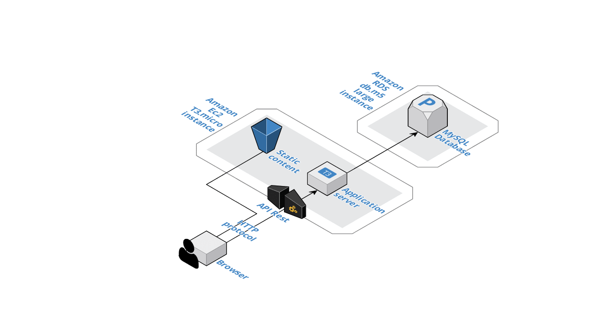
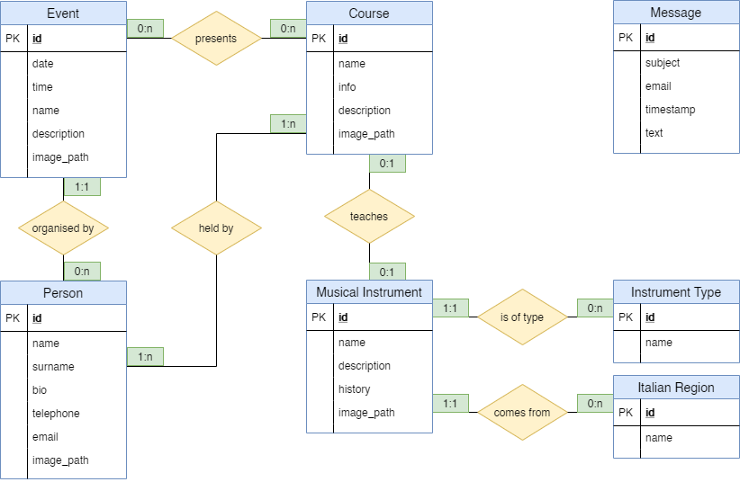

Amazon Web Services has been chosen for the architecture of Lemon Peel website.
The active services are two: Ec2 to run the server and Amazon RDS to configure a MySQL database.
The Ec2 instance (t3.micro) contains a running Node JS server created with Swagger and then modified to fit the needs of the application. Static contents are stored into the Ec2 machine and served by serve-static module, while it's possibile to retrieve the data stored into the database only through API calls.
The MySQL database, a db.t2.micro instance created with Amazon RDS, is configured to be accessible only by the Ec2 machine for security reasons. To retrieve or send data, the clients must ask what they need to the server that will query the database and send back the responses.
The data with which the pages are filled are retrieved with AJAX calls to the NodeJS server, so that the HTML pages are not rendered server side but in the local machine of the user.
Checking online documentation about the REST principles, five main architectural constraints have been followed to ensure the service to be considered REST:
The models introduced for data use resources that correspond to relevant items for Lemon Peel association. For the first four entities, a second model has been introduced, called "preview" (Person preview, Event preview, ...), that contains name and image of a specific item, used to be incorporated in the pages that contain a link to them, so that the navigation is facilitated for the users. The resources are the following:
The following image represents the ER diagram used to build the database of the application. Intermediate tables have been used to break the n to n relations. The main resources are mapped to the table that has their name, and all the fields described into it, while the preview of the linked objects are taken from the relative tables.
Example: Course model has name, info, description and image fields that are all represented in the Course table. The musical instrument taught in that course (considered a preview) has name and image taken directly from the Musical Instrument table, because of the 0:1 - 0:1 relation. Preview information (name and image) about teachers of that course are retrieved from the Person table passing through the intermediate table that maps courses to people (due to 1:n - 1:n relation between them).
The backend of the application was entirely created with NodeJS. The skeleton has been generated by Swagger with Generate Server button in the Swagger editor. Then, with the help of knex module, the MySQL database has been connected to the server, safely storing its credentials using dotenv module.
Moreover, PM2 (Process Manager for NodeJS) is used on the server. It is configured to run the node application automatically when the machine starts, managing three instances of the server at the same time and acting as a load balancer between them.
Partial inspiration has been taken from Wired website that uses REST APIs to retrieve the latest news by category from the server. Even if Wired website is significantly different from Lemon Peel one, it has been useful to see how the data are structured in the response body and how they are used to compose a small part of the home page. In particular, how information about the authors and about the categories of the articles are ritrieved together with the article data in its API response and how images links are included in the data. These information helped during the design process of Lemon Peel website.